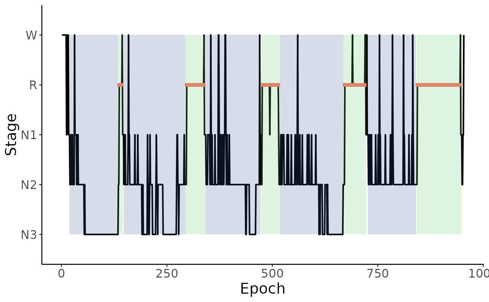
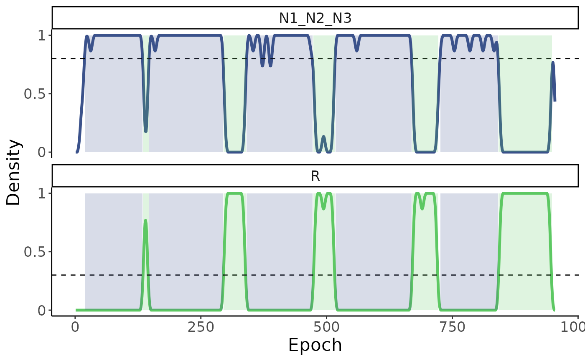
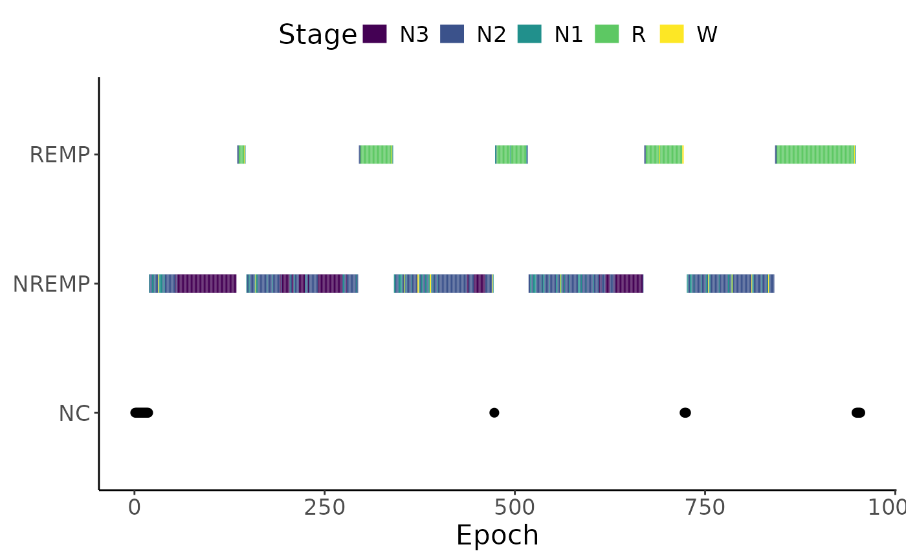

Sleep Cycle Visualization Functions
sleep_plots.RdThese functions generate plots related to sleep cycles from a SleepCycle object (can be single- or multi-subject).
Arguments
- sleepcycle_obj
An object of class
SleepCycle.- id
(Optional) A subject identifier for grouped objects.
- stage_order
(Optional) Reorders sleep stages in
plot_hypnogram().- overlay_cycles
Logical. If
TRUE, overlays sleep cycles on the plots.- overlay_clrs
Color palette for cycle overlays.
- clrs
Color palette for different sleep states.
Details
plot_hypnogram(): Plot a standard hypnogram.plot_densities(): Plots density estimates of sleep stages.plot_cycles(): Plots NREM and REM cycles, as well as non-cycle segments (labeled NC on plot).
Examples
data("hypnogram_single")
plot_hypnogram(
sleepcycles_from_hypnogram(
hypnogram_single,
epoch_col = "epoch",
stage_col = "stage",
verbose = FALSE
)
)

plot_densities(
sleepcycles_from_hypnogram(
hypnogram_single,
epoch_col = "epoch",
stage_col = "stage",
verbose = FALSE,
method = "dude"
)
)

plot_cycles(
sleepcycles_from_hypnogram(
hypnogram_single,
epoch_col = "epoch",
stage_col = "stage",
verbose = FALSE
)
)
